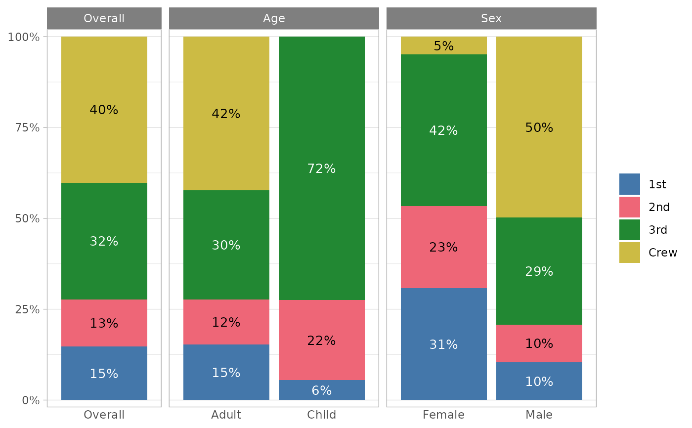
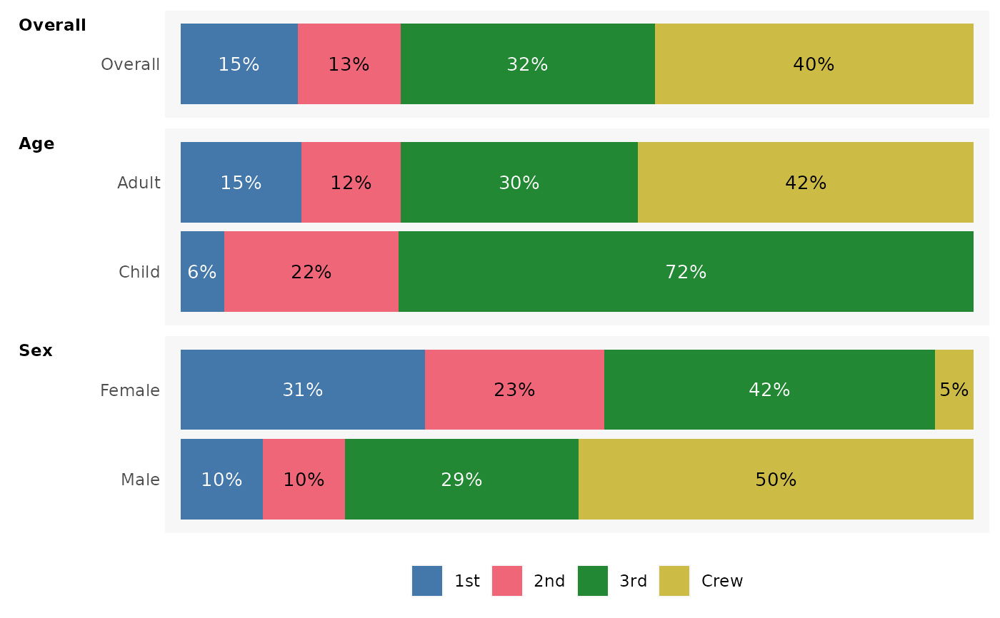
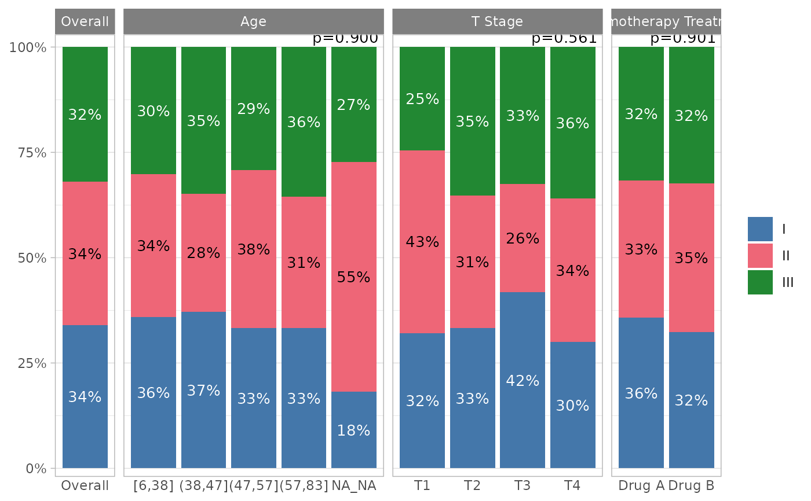
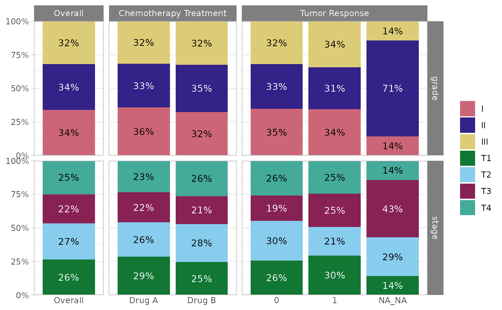
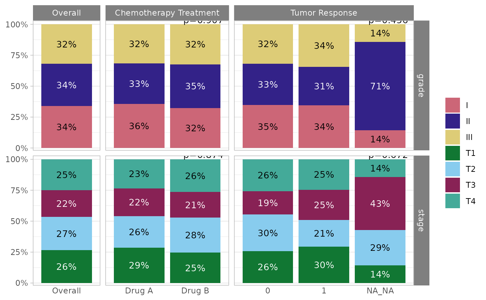
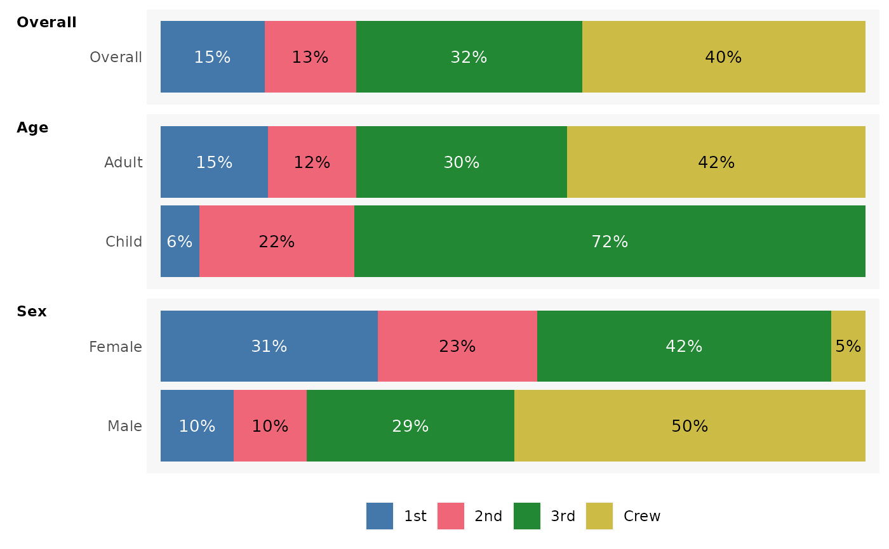
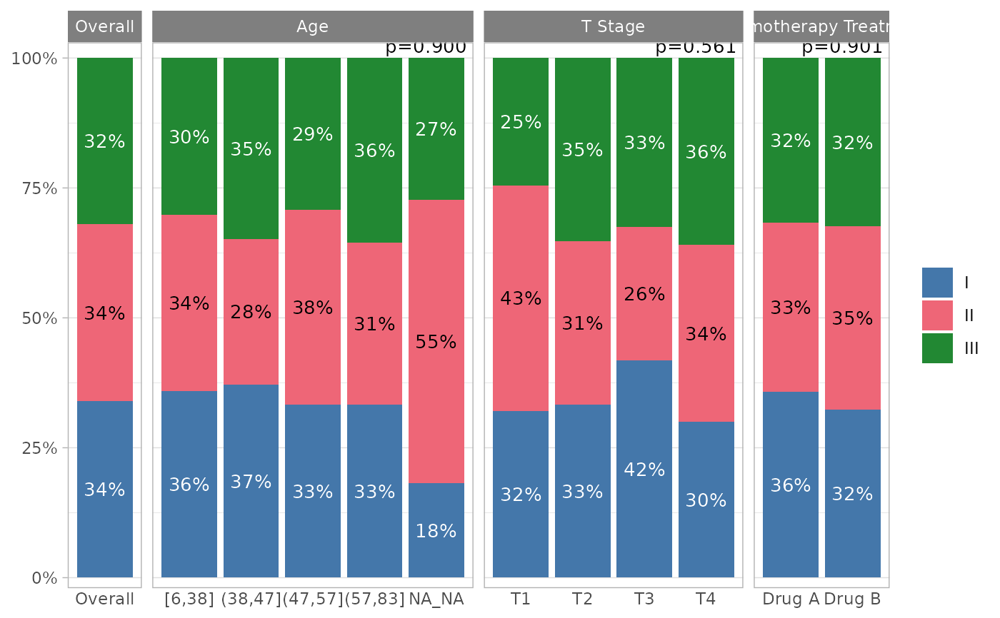
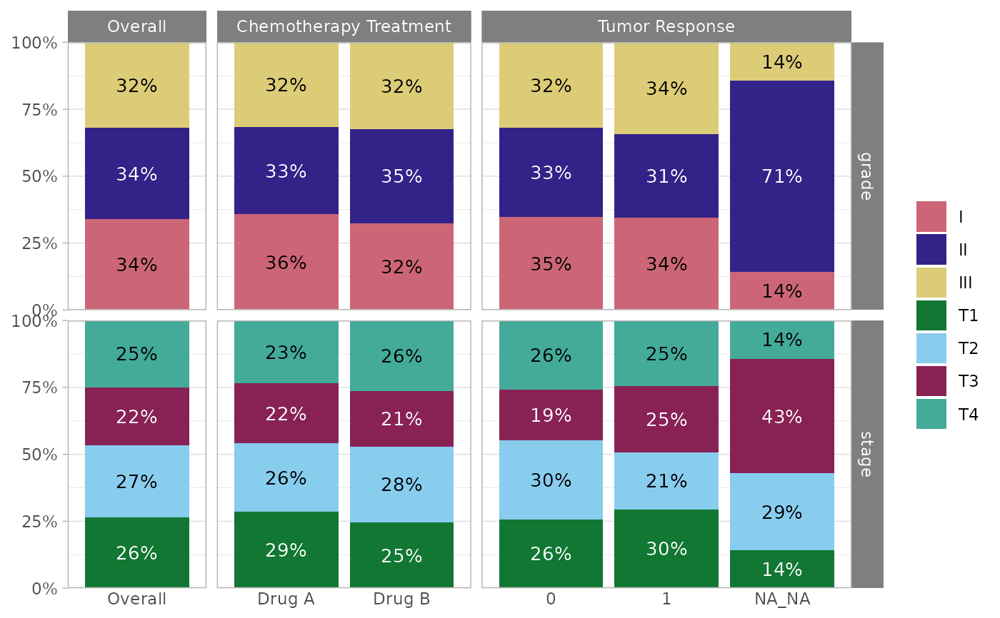
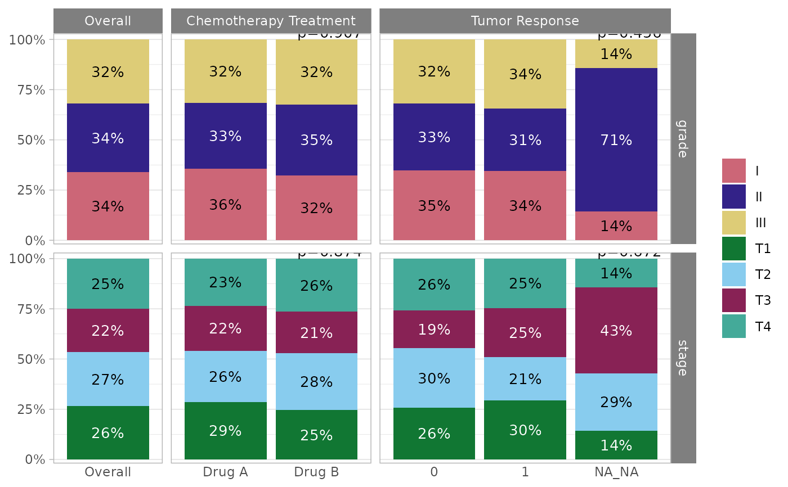

Plot one or several categorical variables by sub-groups. See proportion()
for more details on the way proportions and confidence intervals are
computed. Return a bar plot (see examples).
Usage
plot_categorical(
data,
outcome,
na.rm = TRUE,
by = NULL,
drop_na_by = FALSE,
convert_continuous = TRUE,
...,
show_overall = TRUE,
overall_label = "Overall",
show_labels = TRUE,
labels_labeller = scales::label_percent(1),
labels_size = 3.5,
labels_color = "auto",
facet_labeller = ggplot2::label_wrap_gen(width = 50, multi_line = TRUE),
flip = FALSE,
minimal = FALSE,
return_data = FALSE
)Arguments
- data
A data frame, data frame extension (e.g. a tibble), or a survey design object.
- outcome
<
tidy-select> List of categorical variables to be plotted.- na.rm
Should
NAvalues be removed from theoutcome?- by
<
tidy-select> List of variables to group by (comparison is done separately for each variable).- drop_na_by
Remove
NAvalues inbyvariables?- convert_continuous
Should continuous variables (with 5 unique values or more) be converted to quartiles (using
cut_quartiles())?- ...
Additional arguments passed to
ggplot2::geom_bar().- show_overall
Display "Overall" column?
- overall_label
Label for the overall column.
- show_labels
Display proportion labels?
- labels_labeller
Labeller function for proportion labels.
- labels_size
Size of proportion labels.
- labels_color
Color of proportion labels.
- facet_labeller
Labeller function for strip labels.
- flip
Flip x and y axis?
- minimal
Should a minimal theme be applied? (no y-axis, no grid)
- return_data
Return computed data instead of the plot?
Examples
titanic |>
plot_categorical(
Class,
by = c(Age, Sex)
)

# \donttest{
titanic |>
plot_categorical(
Class,
by = c(Age, Sex),
show_overall = FALSE,
flip = TRUE
)
 titanic |>
plot_categorical(
Class,
by = c(Age, Sex),
flip = TRUE,
minimal = TRUE
)

# }
# \donttest{
gtsummary::trial |>
plot_categorical(grade, by = c(age, stage, trt))

gtsummary::trial |>
plot_categorical(grade, by = c(age, stage, trt), drop_na_by = TRUE)

gtsummary::trial |>
plot_categorical(c(grade, stage), by = c(trt, response))

# }
titanic |>
plot_categorical(
Class,
by = c(Age, Sex),
flip = TRUE,
minimal = TRUE
)

# }
# \donttest{
gtsummary::trial |>
plot_categorical(grade, by = c(age, stage, trt))

gtsummary::trial |>
plot_categorical(grade, by = c(age, stage, trt), drop_na_by = TRUE)

gtsummary::trial |>
plot_categorical(c(grade, stage), by = c(trt, response))

# }